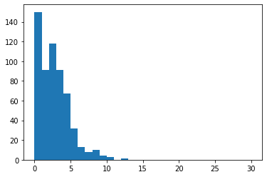
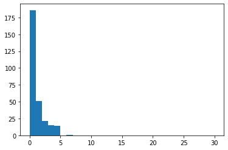
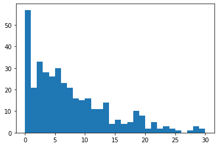
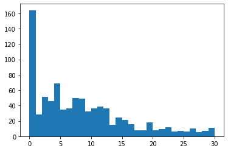

グラフ構造の諸指標#
クイズ#
Q: 研究者のネットワーク#
科学研究費助成事業（略称「科研費」）は学術研究を格段に発展させることを目的とし，文部科学省および日本学術振興会が審査・交付を行っている競争的研究費である． 日本の大学研究者の多くは，科研費を獲得・活用して研究活動を行っている． 科研費に採択された研究プロジェクトについては科学研究費助成事業データベースに公開されており，プロジェクトの概要やプロジェクトに関わる研究者を確認することができる．
コチラからダウンロードできるファイルは，2025年4月1日の時点で科学研究費助成事業データベースから取得した一部のデータを圧縮したものである． 解凍後に得られる4つのファイルは，ある審査区分（研究分野）の採択プロジェクトに携わったことのある研究者同士の共同研究関係を（NetworkXの）隣接行列形式で保存したファイルとなっている． ファイルと対象としている審査区分の対応関係は以下の通り：
collaboration_eme.adjlist: 「電気電子材料工学関連」分野collaboration_mb.adjlist: 「分子生物学関連」分野collaboration_ps.adjlist: 「宇宙惑星科学関連」分野collaboration_jh.adjlist: 「日本史関連」分野
上記ファイルをNetworkXライブラリを使って読み込み，各研究分野の共同研究者ネットワークを示すグラフを可視化しなさい． また，各グラフの
ノード数
密度
次数の平均値
次数の分布
を比較しなさい．
import networkx as nx
import numpy as np
import matplotlib.pyplot as plt
DRAW_CONFIG = {
'node_size': 10,
'font_size': 3,
'with_labels': False,
'width': 0.25,
'alpha': 0.8
}
# 電気電子材料工学関連分野の共同研究者グラフを読み込む
G_eme = nx.read_adjlist("../../data/kakendb/collaboration_eme.adjlist")
# グラフ可視化
pos = nx.spring_layout(G_eme, iterations=15)
nx.draw(G_eme, pos, **DRAW_CONFIG)
# 諸指標の計算
print("ノード数: ", G_eme.number_of_nodes())
print("密度: ", nx.density(G_eme))
degrees_eme = [degree for n, degree in G_eme.degree]
print("平均次数: ", np.mean(degrees_eme))
ノード数: 588
密度: 0.003824357681743907
平均次数: 2.2448979591836733
# 次数分布のヒストグラム
plt.hist(degrees_eme, range=(0, 30), bins=30);

# 分子生物学関連分野の共同研究者グラフを読み込む
G_mb = nx.read_adjlist("../../data/kakendb/collaboration_mb.adjlist")
# グラフ可視化
pos = nx.spring_layout(G_mb, iterations=15)
nx.draw(G_mb, pos, **DRAW_CONFIG)
# 諸指標の計算
print("ノード数: ", G_mb.number_of_nodes())
print("密度: ", nx.density(G_mb))
degrees_mb = [degree for n, degree in G_mb.degree]
print("平均次数: ", np.mean(degrees_mb))
ノード数: 288
密度: 0.0024196670538133955
平均次数: 0.6944444444444444
# 次数分布のヒストグラム
plt.hist(degrees_mb, range=(0, 30), bins=30);

# 宇宙惑星科学関連分野の共同研究者グラフを読み込む
G_ps = nx.read_adjlist("../../data/kakendb/collaboration_ps.adjlist")
# グラフ可視化
pos = nx.spring_layout(G_ps, iterations=15)
nx.draw(G_ps, pos, **DRAW_CONFIG)
# 諸指標の計算
print("ノード数: ", G_ps.number_of_nodes())
print("密度: ", nx.density(G_ps))
degrees_ps = [degree for n, degree in G_ps.degree]
print("平均次数: ", np.mean(degrees_ps))
ノード数: 394
密度: 0.020769558646878752
平均次数: 8.16243654822335
# 次数分布のヒストグラム
plt.hist(degrees_ps, range=(0, 30), bins=30);

# 日本史関連分野の共同研究者グラフを読み込む
G_jh = nx.read_adjlist("../../data/kakendb/collaboration_jh.adjlist")
# グラフ可視化
pos = nx.spring_layout(G_jh, iterations=15)
nx.draw(G_jh, pos, **DRAW_CONFIG)
# 諸指標の計算
print("ノード数: ", G_jh.number_of_nodes())
print("密度: ", nx.density(G_jh))
degrees_jh = [degree for n, degree in G_jh.degree]
print("平均次数: ", np.mean(degrees_jh))
ノード数: 913
密度: 0.01086643223612152
平均次数: 9.910186199342826
# 次数分布のヒストグラム
plt.hist(degrees_jh, range=(0, 30), bins=30);
